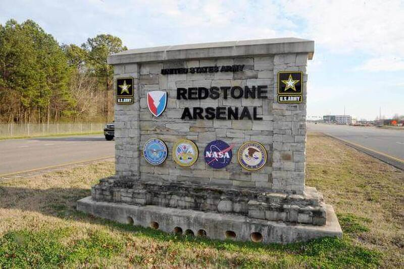

Redstone Arsenal
Alabama

Army aviation and missile hub, also home to NASA's Marshall Space Flight Center. In a recorded Zoom call later posted online, anti-gravity researcher Amy Eskridge said "disclosure's gonna come out of Huntsville, Alabama, out of Redstone Arsenal," calling it "the biggest deal that you've never heard of." The call is undated; a transcript was archived in January 2024. UNVERIFIED: she gave no evidence, and no official record ties UAP disclosure to Redstone. 1,2
Open in the interactive Watcher
Related
- Hermann Oberth Person
Sources
- [Archive] - Amy Eskridge Zoom (automated transcript of a recorded Zoom call with Jeremy Rys and Mark Sokol) Blocked Epistemology (Substack), Jan. 27, 2024
- Amy Eskridge Zoom call (recording) YouTube